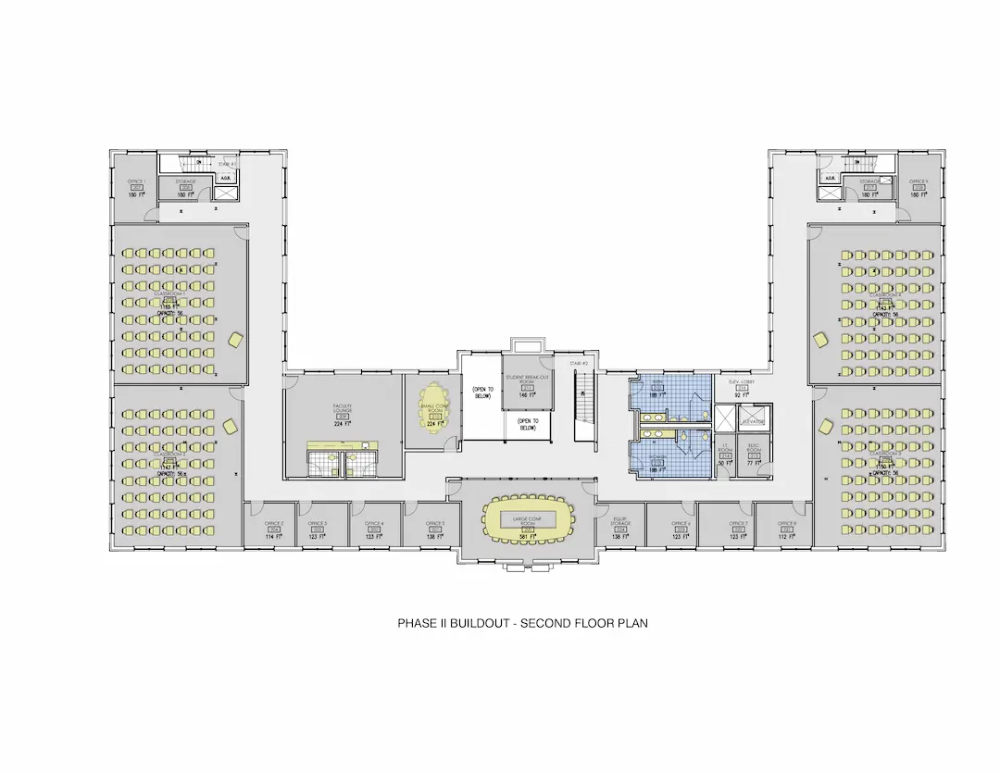
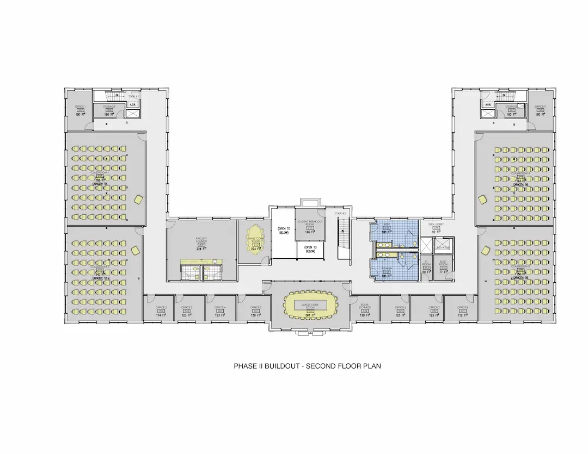

Ellzey Hall Renovations
The restoration of Ellzey Hall, originally constructed in 1928 and then fully renovated in 1968, entailed a full restoration of the exterior, and will include an adaptive-reuse of the interior. A careful programming process for the project with key campus administrators began with a series of on-campus meetings and presentations and resulted in a functional space program. The project provides the following: a student-friendly campus facility to serve as a student lounge; student success center; much-needed new classrooms and computer lab; new office space; meeting space for various size groups; restoration of the original architecture, including reconstruction of a pitched roof, reconstructed frontispiece, and removal of non-original elements, such as exterior stair appendages and aluminum windows.


 
